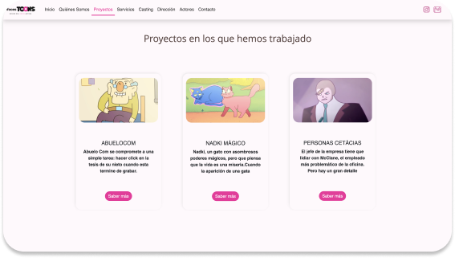

VocesToons.cl
Me siento muy orgulloso de haber diseñado y desarrollado el sitio web de Vocestoons.cl. Trabajé estrechamente con la empresa para presentar sus servicios de animación de manera atractiva y efectiva en el sitio web, utilizando Bootstrap 5 y las últimas técnicas de diseño web. Fue un proyecto desafiante pero gratificante, y estoy feliz de haber ayudado a la empresa a expandir su presencia en línea y a mejorar su estrategia digital.